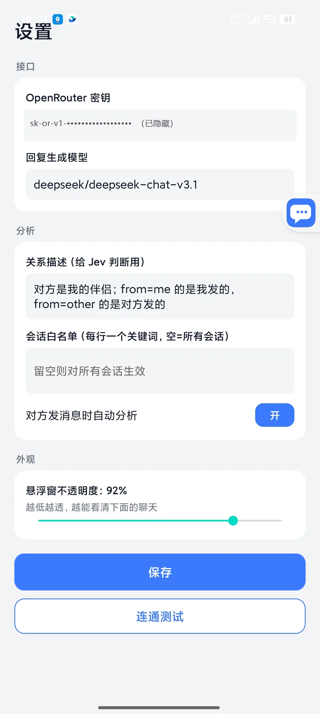

Judge
TypeSafe's Jev judgment model gives you, in one pass: the other person's real intent, a risk level from 1–9, what they need, whether to reply right now, and the best action. About 1 second, with a confidence score.
Reads the other person, three replies, fills in one tap. WeChat / QQ / X / Feishu / Instagram / Messages all working end to end, with Windows / macOS desktop versions too.
adb install -r jev-assistant-v1.2-release.apk
If it's useful, star it on GitHub
It only fills the reply into the input box — never sends automatically, and never touches transfers, red packets, or receiving payments.

Already working in these apps
Most assistants just hand you a message. Jev first judges what this message really is, then decides how to reply.
TypeSafe's Jev judgment model gives you, in one pass: the other person's real intent, a risk level from 1–9, what they need, whether to reply right now, and the best action. About 1 second, with a confidence score.
The generation model (DeepSeek by default) drafts 3 natural-sounding replies, then Jev re-ranks them by "best fit" and gives each a share, so there's a reason behind whichever comes first.
One tap and the reply lands in the input box. It only fills, never sends automatically, and never touches transfers, red packets, or receiving payments. That last tap is always yours.
Everyone claims to "help you reply" — the difference is how much they can read, whether they judge before writing, and who taps send.
| Capability | Jev Chat Assistant | Keyboard / built-in app AI replies | General chatbots (copy-paste) | Auto-reply bots |
|---|---|---|---|---|
| Judges before writing | ✓ | ✗ | Partial | ✗ |
| Reads any chat app | ✓ | Partial | ✗ | Partial |
| Non-invasive, doesn't modify the client | ✓ | ✓ | ✓ | ✗ |
| You tap send | ✓ | ✓ | ✓ | ✗ |
| Knowledge base + contact context | ✓ | ✗ | Partial | Partial |
| Choose your own endpoint / model | ✓ | ✗ | ✗ | Partial |
| Open source and free | ✓ | ✗ | ✗ | Partial |
Comparisons are based on commonly available public offerings in general, not any specific product.
Built for everyday chats — not a demo.
Judging, drafting, ranking, and filling all run on the same core. Adding a new app only takes a few dozen lines in one adapter — everything else is shared.
It doesn't modify any app's package, doesn't go through their APIs or accounts, and doesn't read their databases. It only uses the system accessibility service to read "the conversation currently on screen."
Notes and contact profiles (relationship, aliases, notes) are kept locally. Matching knowledge and that person's chat history are pulled in automatically during analysis, so candidate replies stay consistent with what you've recorded. Contacts can be linked across apps.
When the message body isn't in the node tree, it automatically takes a screenshot and reads it with ML Kit's offline Chinese OCR — no image is uploaded and no Google service is required. Any app can also trigger "Read screen once (OCR)" manually from the overlay menu.
The Judge / Reply / Vision endpoints each have their own URL, key, and model. Built-in presets for OpenRouter, direct TypeSafe, DeepSeek official, and Tongyi-compatible endpoints, each with a one-tap connectivity test. A single OpenRouter key is enough to get started.
Keys are stored only in the app's private storage. Chat content is only sent to your configured model endpoint at the moment of analysis — never written to disk or logged. History is off by default, and even when enabled it's stored only on your device.
Based on real-device testing; version numbers are the ones verified.
| Platform | Status | Notes |
|---|---|---|
| WeChat Android | Full pipeline | Verified on 8.0.78 |
| QQ Android | Full pipeline | Verified on 9.3.50 |
| X / Twitter DMs | Full pipeline | Verified on 12.25, Chinese UI |
| Feishu / Lark | OCR fallback | Verified on real hardware, offline OCR for message text |
| Full pipeline | DMs, real device | |
| Google Messages (SMS) | Full pipeline | SMS/RCS threads, real device |
| Any other app | Manual | "Read screen once (OCR)" from the overlay menu |
| WeChat Windows 4.x | Full pipeline | v0.1.6 · window screenshot + offline OCR |
| WeChat macOS | Full pipeline | v0.3.0 · screen reading + local model |
| Web | Planned | — |
Judging, drafting, and ranking all share the same core; only how each platform captures the screen differs. The rule stays the same everywhere: read-only, fill but never send.
The accessibility service reads the conversation on screen, falling back to offline OCR when it can't. WeChat / QQ / X / Feishu / Instagram / Messages are all working end to end.
Download SourceScreenshots your own WeChat window + local offline OCR — no hooking, no reading the database. Built for WeChat Windows 4.x.
Download SourceReads the screen and uses a local small model to judge intent and risk level, drafts candidates in your own voice, and ranks them locally. Built for WeChat macOS.
Download SourceInstall the APK on Android; download Windows / macOS from their own release pages.
Download the APK and install it directly, Android 11+. Or use adb:
adb install -r jev-assistant-v1.2-release.apk
Desktop: Windows v0.1.6 · macOS v0.3.0
Settings → Endpoints → fill the Judge API card with your OpenRouter API key; leave the rest blank and they'll inherit it automatically. All three endpoints have a one-tap connectivity test.

Accessibility, overlay window, autostart + no battery restrictions. The last two are required on Xiaomi / HyperOS, or the bubble gets frozen.
From a message on screen to a sentence in the input box — just these few steps.
The accessibility service reads the current conversation; falls back to screenshot OCR if it can't
Intent · risk level 1–9 · whether to reply now
3 natural-sounding candidate replies
Re-ranks by "best fit" and gives each a share
The judgment plus three candidates, right next to the conversation
Never sends — that last tap is always yours
No. It only fills the reply into the input box — it never sends automatically, and never touches transfers, red packets, or receiving payments. Whether to send, and any edits, are entirely up to you.
Yes. The Windows version (v0.1.6) is built for WeChat Windows 4.x — it screenshots your own window plus local offline OCR; the macOS version (v0.3.0) is built for WeChat macOS — it reads the screen and judges with a local small model. There's no web version planned yet.
A single OpenRouter API key is enough to get running — put it in the "Judge API" field, and the Reply and Vision endpoints will inherit it automatically if left blank. You can also configure all three separately; built-in presets cover OpenRouter, direct TypeSafe, DeepSeek official, and Tongyi-compatible endpoints, each with a one-tap connectivity test.
It's only sent to your own configured model endpoint at the moment of analysis, never written to disk or logged afterward. Keys are stored only in the app's private storage. History is off by default, and even when enabled it stays on your device. OCR runs through ML Kit's offline Chinese recognition, so images are never uploaded.
Questions, suggestions, or want to help add a new app — reach out.
Scan to follow; a DM there is the most direct way to reach us.
The group QR code expires after 7 days; the latest one is kept at the bottom of the repo README.
Get the group QR code from the READMEFor bugs, an app that isn't being read correctly, or a request for a new adapter — Issues is the best way to track it.
Open an issueOpen source, MIT · Android v1.2 · Windows v0.1.6 · macOS v0.3.0